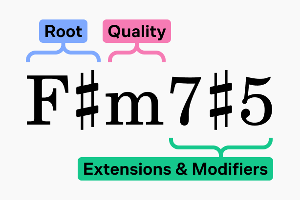
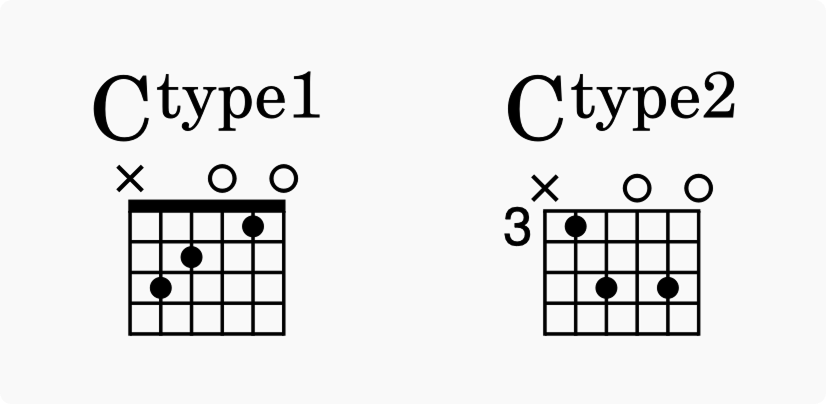
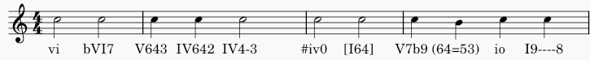
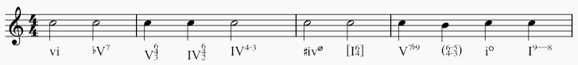
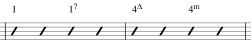
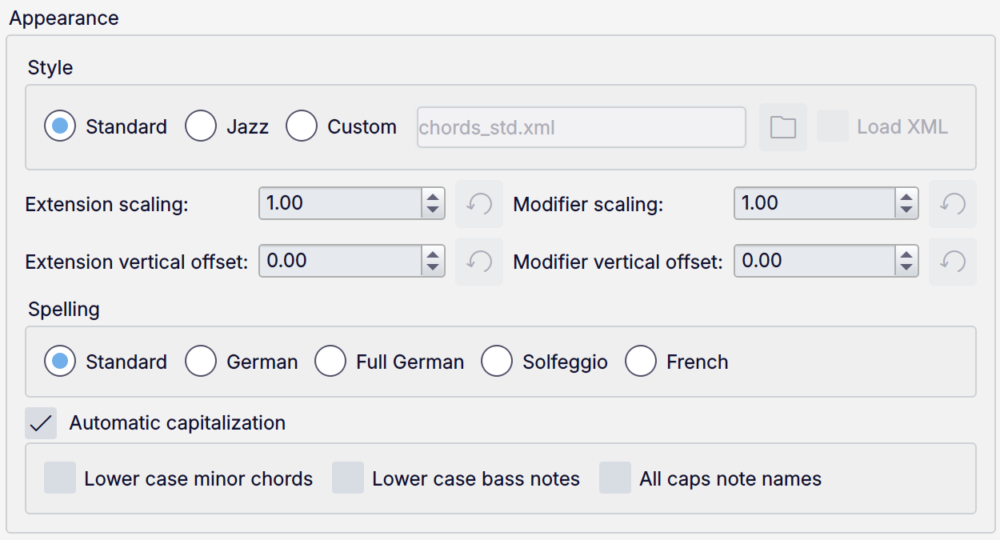
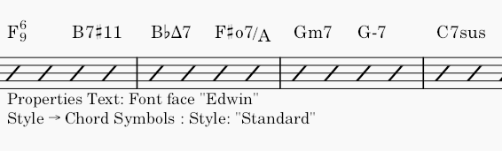
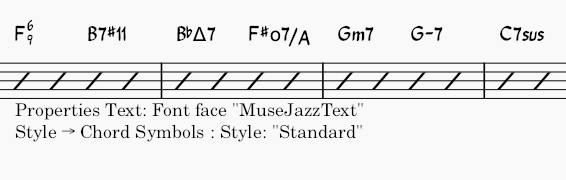
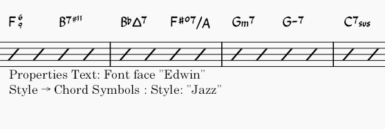

和弦符号
概述
和弦符号是一种用缩写方式表示音乐和弦及其和声的方法。
MuseScore Studio 支持以下表示和弦的方式：
- 和弦符号：字母和弦名加和弦性质。例如 'Am'。
- 罗马数字分析 (RNA)：罗马数字加和弦性质。例如 'vi'。
- 纳什维尔数字系统 (NNS)：阿拉伯数字加和弦性质。例如 '6m'。
和弦符号
MuseScore 使用以下术语来描述和弦符号的各个部分：

- 根音：为和弦命名的音符。
- 性质：大、小、减、半减或增。
- 扩展与修饰：对和弦的其他变化（7、sus、no 3 等）。
和弦符号以纯文本形式指定。当你完成和弦编辑后（通过移动到另一个和弦，或离开编辑模式），这些字符会被解析，只要 MuseScore Studio 能理解该序列，就会被正确格式化。
输入和弦符号
- 选择一个音符、音符斜线或休止符。
- 按 Ctrl+K（Mac：Cmd+K）；和弦符号输入光标会出现在谱表上方，准备输入。
- 使用以下语法输入和弦符号：
* 根音：任意字母
A到G（大小写不重要）。 * 变音记号：#（升号）、b（降号）、x或##（重升号）、bb（重降号）。 * 有关其他符号、扩展和修饰，请参阅 #chord-symbol-syntax。 - 要将输入光标向前移动到下一个拍、音符或休止符（以先出现者为准），请按 Space。有关移动光标的其他方式，请参阅 #navigation-commands。
- 要退出输入模式，请按 Esc 或单击乐谱中的空白处。
和弦符号必须以根音（字母 a 到 g 中的任意一个）或左括号 ( 开头。
当和弦符号被格式化时，以小写字母输入的根音会自动变为大写（有关替代选项，请参阅自动大写），并且为变音记号输入的任何字符都会自动转换为相应的音乐符号。不要直接输入（或复制粘贴）诸如 U+266F（升号 ♯）或 U+266D（降号 ♭）之类的 Unicode 字符，因为 MuseScore 无法在和弦记谱中正确渲染它们。
编辑和弦符号
和弦符号是文本项。双击和弦符号进入编辑模式。编辑时，和弦符号会以下面描述的语法所对应的文本显示。当你离开编辑模式时，它会再次转换为正确的格式。
和弦符号语法
MuseScore 能理解和弦符号中使用的大多数标准缩写，并会相应地播放它们。可以按如下方式输入：
- 大：
M、Ma、Maj、ma、maj、t t会生成 Δ；在 Mac 上，ˆ也可以使用- 小：
m、mi、min、- - 减：
dim、o（如果使用爵士风格则渲染为 °；否则渲染为 o，即希腊字母 omicron） - 半减：
0（如果使用爵士风格则渲染为 ø；否则渲染为 0），也可以使用诸如mi7b5等缩写。 - 要得到 Dø，输入
D0，而不是Dm70或Dm0。 - 增：
aug、+
也接受以下语法：
- 扩展和修饰：例如
7、b9、#5、sus、alt、add和no3。 - 转位和斜线和弦：在变化的低音音符前输入斜杠（
/），例如C7/E。 - 复合和弦（多个和弦堆叠）：在两个和弦之间输入竖线字符（
|），例如F|C。 - 复合和弦的完整播放尚不支持。只会播放第一个和弦。
你还可以使用以下方法进一步格式化和弦：
- 圆括号，可以括住和弦符号的任意部分（或整个符号）
- 逗号
- 要在和弦符号中输入空格字符，使用 Ctrl+Space（Mac：Alt+Space）。
- 要在根音之后输入显式的还原号，使用快捷键 Ctrl+Shift+H（Mac：Cmd+Shift+H）。
- 使用显式还原号时，播放会缩减为仅该和弦的根音。
- 在和弦末尾输入
type后跟任意字符（例如Ctype1或Ctype2）会添加上标，可用于表示同一和弦的不同版本。一种用途是区分那些和弦名相同但品位图不同的情况。

“无和弦”语法
在和弦符号中输入 N.C. 表示乐谱中该位置不应播放和弦，从而停止该乐器上前面所有和弦符号的播放。
这是在和弦符号轨上指定静音的最常用标记，但你也可以输入 MuseScore 无法识别为和弦的任意文本，以达到相同的效果。
和弦符号与品位图
MuseScore Studio 可以自动为大多数常见和弦符号创建吉他品位图。请参阅品位图。
罗马数字分析
MuseScore Studio 使用专门的字体（Campania）来为 RNA 提供正确的格式。与和弦符号不同，当你使用下面描述的语法输入 RNA 时，正确的符号和格式会随着每次击键而显示出来。
输入罗马数字分析
- 选择一个音符、音符斜线或休止符
- 从菜单中选择 添加→文本→罗马数字分析（如果你经常使用此功能，可以在偏好设置中为其分配键盘快捷键）
- 像输入普通文本一样输入该和弦的 RNA 符号，如下所示：
* 大和弦：大写罗马数字（
I、II、III、IV等） * 小和弦：小写罗马数字（i、ii、iii、iv等） * 减和弦：o（小写） * 半减和弦：0* 增和弦：+* 和弦转位：输入最多 3 个一位数字，最高音在前 * 变音记号：#（升号）、b（降号）或h（还原号） - 要移动输入光标，命令与和弦符号相同：请参阅导航命令
- 要退出输入模式，请按 Esc 或单击乐谱中的空白处。
输入时，可以通过在字符前加上 \（反斜杠）来防止任何字符被解释。例如，这可以用来添加字面字母 'b' 或 'h'，或输入非上标的数字等。
转位可以用字母 a、b、c、d 来表示，只需直接输入这些字母即可。
有关一些更复杂的语法，请参阅以下示例。
示例
输入以下内容：

得到如下结果：

不支持使用带有变音记号的垂直对齐阿拉伯数字（例如 6#3，即变化和弦）的转位记谱。作为变通方法：改为创建数字低音文本，或创建单独的文本对象并手动将其移动到合适位置。
纳什维尔数字系统
纳什维尔数字系统 (NNS) 是一种通过音级而非和弦字母来表示和弦的简写方法。这使得伴奏可以在任何调性下使用同一份和弦谱来演奏。
输入纳什维尔数字
要开始输入纳什维尔记谱：
- 选择一个音符、音符斜线或休止符
- 从菜单中选择 添加→文本→纳什维尔数字。
与标准和弦符号一样，你可以正常输入纳什维尔记谱，MuseScore 会尽力识别并正确格式化这些符号。
使用与其它和弦符号类型相同的导航命令。

纳什维尔数字系统的一个示例
导航命令
在和弦符号输入模式下，使用以下键盘快捷键移动光标：
| 操作 | 命令 (Windows) | 命令 (macOS) |
|---|---|---|
| 将光标移动到下一个音符、休止符或拍 | Space | Space |
| 将光标移动到下一拍 | ; | ; |
| 将光标移动到上一个音符、休止符或拍 | Shift+Space | Shift+Space |
| 将光标移动到上一拍 | : | : |
| 将光标移动到下一小节 | Ctrl+Right | Cmd+Right |
| 将光标移动到上一小节 | Ctrl+Left | Cmd+Left |
| 按时值数字移动光标 | Ctrl+1-9 | Cmd+1-9 |
| 退出和弦符号输入 | Esc | Esc |
和弦符号播放
只有和弦符号和纳什维尔数字可以被播放；罗马数字分析不能。
完全禁用或重新启用和弦符号的播放
- 单击播放控件右端的齿轮按钮

- 在菜单中，选择播放和弦符号以切换该设置的关闭或开启。

禁用或重新启用特定和弦符号的播放
- 选中该和弦符号。
- 转到属性面板。
- 在常规选区中，勾选或取消勾选播放框。
切换特定乐器上和弦符号的播放
- 打开混音器。
- 找到该乐器上和弦的通道条（其名称为 'Chords.[乐器名]'）。
- 将其静音按钮切换为开或关。
更改用于播放和弦符号的声音
- 打开混音器。
- 找到该乐器上和弦的通道条（其名称为 'Chords.[乐器名]'）。
- 选择悬停在声音名称上时出现的下拉箭头，以选择新声音。
和弦符号样式
和弦符号的全局样式选项位于 格式→样式→和弦符号 中。并非每个设置都适用于每种类型的和弦符号记谱。当不相关时，它们将没有效果（例如，切换到爵士样式会影响和弦符号和 NNS，但不会影响 RNA）。
每种类型的和弦符号记谱都有其自己的默认文本样式，可以在 格式→样式→文本样式（和弦符号、罗马数字分析、纳什维尔数字）中配置。
外观

样式
这决定了和弦符号的渲染方式。它会影响乐谱中的所有和弦符号，且不能针对特定项覆盖。
- 标准：默认值，和弦使用标准文本字体渲染，没有额外格式
- 爵士：使用 MuseJazz 字体以获得手写外观，具有独特的上标和其他特殊特征
- 旧版 MuseScore：用于在 4.6 之前的 MuseScore Studio 版本中创建的乐谱[^1]
- 自定义：使用此选项，你可以通过和弦符号样式文件（XML 格式，扩展名为
.xml）自定义和弦符号的外观
创建和修改和弦符号样式文件是面向高级用户的功能，但它确实提供了一种方式来定制和弦符号的解析、格式化和解释，超越了样式对话框中可用的选项。
相关文件通常位于安装目录的 Styles 文件夹中（例如在 Windows 中，默认位于 C:\Program Files\MuseScore 4\styles）。请查阅这些文件中的注释，了解其语法和功能的说明。
你可以通过扩展/修饰缩放（作为整个和弦符号大小的比例）自定义扩展和修饰的缩放，并通过扩展/修饰垂直偏移（以空格为单位表示）自定义其垂直位置。
以下是一些和弦在不同设置下的渲染示例：



拼写
这些选项仅影响和弦符号（不影响罗马数字分析或纳什维尔数字）。
拼写下提供以下选项：
- 标准：A、B♭、B、C、C♯...（这是默认值）
- 德语：A、B♭、H、C、C♯...
- 完整德语：A、B、H、C、Cis...
- 唱名：Do、Do♯、Re♭、Re...
- 法语：Do、Do♯、Ré♭、Ré...
如果自动大写开启（默认开启），MuseScore 会将和弦的所有根音大写，无论它们是以大写还是小写输入。你可以通过取消勾选该框来完全禁用此行为，在这种情况下大小写将保持你输入时的样子；或者你可以通过以下选项自定义其行为：
- 小写小和弦：小和弦将变为小写（大和弦仍会大写）
- 小写低音音符：低音音符将变为小写
- 音名全部大写：音名中的所有字母（而不仅仅是首字母）都将大写（例如 DO、RE、MI）
定位

- 到品位图的距离：和弦符号与其下方品位图之间的距离
- 最小和弦间距：两个和弦符号之间的最小水平距离
- 最大小节线距离：（此选项过去用于控制小节中最后一个和弦符号与随后小节线之间的距离，但现在已废弃）
- 最大上/下位移：和弦符号可向上或向下移动以与其在系统上的前一个符号对齐的最大距离。如果这些值设为 0，符号将不对齐；要强制所有和弦在系统上对齐，请将其设为较大的值。
播放

这些选项仅影响和弦符号和纳什维尔数字（不影响罗马数字分析，它不用于播放）。
可以通过属性面板针对任何特定和弦符号覆盖它们。
- 解释
- 字面
- 爵士：添加色彩音（例如大九度），但也可能省略某些音符。这既取决于和弦本身，也取决于其上下文，比如它后面跟着什么和弦。
- 声部排列
- 自动
- 仅根音：只有低音音符
- 密集：使音符保持在一个八度的跨度内
- 降二：将第二高的音符降低一个八度
- 六音
- 四音：三度、五度、七度和九度音程
- 三音
- 时值
- 直到下一个和弦符号：保持该和弦直到出现下一个和弦符号。
- 直到小节结束：保持该和弦直到小节结束。
- 和弦/休止符时值：保持该和弦的时长等于其所附着的音符或休止符的时值。
这些选项也影响和弦如何被实现为记谱。请参阅 #generating-chord-voicings-onto-a-staff。
要仅使用大三和弦的音符来为和弦排列声部（尤其是在使用爵士解释时），请在和弦名称中使用三角符号 (Δ)。
变调夹品位位置
此功能仅适用于和弦符号，不适用于纳什维尔数字或罗马数字分析。
MuseScore 可以在主和弦符号旁边创建一个额外的带括号的和弦符号，用于使用变调夹演奏时。当在该品位使用变调夹演奏时，带括号的符号听起来与不带括号的相同。
要启用此功能，请将变调夹品位位置设置为大于 0 的值。
和弦符号属性

在属性面板的和弦符号部分，你可以更改当前选中和弦的播放设置，这将覆盖整个乐谱范围的设置。
在文本部分，你可以像其它所有文本项一样覆盖符号文本格式的属性。
当解释设置为爵士时，字体属性会被忽略。
移调
（另请参阅移调章节。）
移调乐器
当开启或关闭音乐会音高时，移调乐器上的和弦符号会自动调整。当音乐会音高关闭，并且和弦符号在移调乐器与非移调乐器之间复制粘贴时，它们会相应地进行移调。但请注意，与品位图关联的和弦不会自动移调。
移调对话框
此功能仅适用于和弦符号，不适用于纳什维尔数字或罗马数字分析。
使用移调对话框（工具→移调）来移调选中的和弦符号。要防止和弦符号被移调，请取消勾选对话框中的移调和弦符号和品位图框。
在和弦上生成声部音符
MuseScore Studio 允许你从选中的和弦符号和纳什维尔数字生成音符（但不包括罗马数字分析）。结果取决于和弦的播放属性。
要实现选中的和弦符号：
- 选中一组和弦符号
- 右键单击选区中的任意和弦
- 单击实现和弦符号
- 在实现和弦符号对话框中，如果你希望覆盖选区的默认选项，请勾选使用自定义选项覆盖并按需配置下面的选项
- 单击确定。
外部链接
要在在和弦上生成声部音符之后更改和弦性质，可以使用如下插件：
要识别和声或和弦，可以使用如下插件：
- 和弦识别器 (Pop & Jazz)，适用于大量使用和声半音化的音乐，因为它生成的 RNA 带有爵士乐影响。
- 和弦 ID 与罗马数字分析，适用于调性稳定的音乐，因为它生成传统的 RNA。
和弦符号样式文件：
- 带上下标和堆叠和弦变化的 chords.xml，由 RunasSudo 分享
- github 问题：支持带堆叠扩展的和弦 #16241，由 MarcSabatella 提供的变通方法
[^1]: 在 4.6 中，为变化低音音符及其斜线的排版引入了新样式。使用旧版 MuseScore 可保持旧的交错排版。